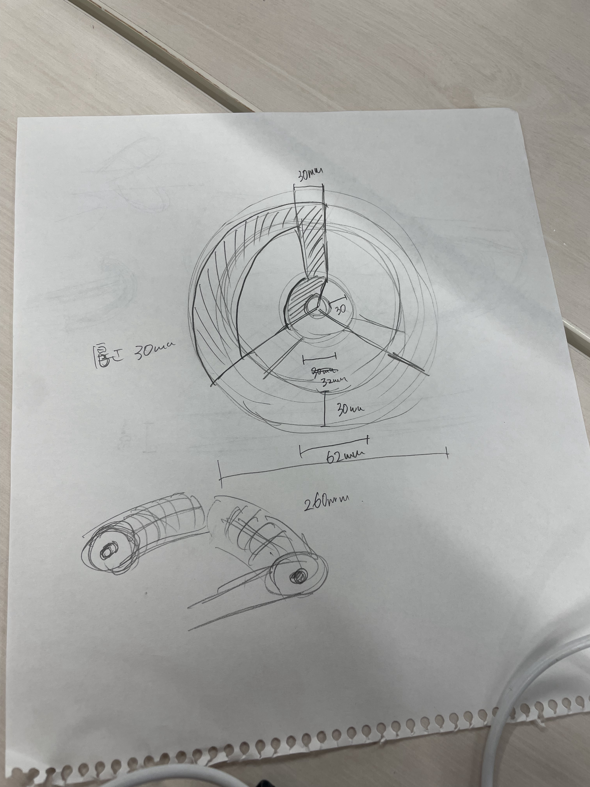

★制作@上履き
・ハンドル制作（実寸サイズ）
イメージ：設計図
★握りやすいように持つ部分の太さはペットボトルキャップのサイズ:28mm⌀に変更
→3Dプリンターで出力・問題
3Dプリンターが20cm以上のものを出力できない! & そのままだと出力にかかる時間が8時間以上かかる…→3分割してあとで組むような仕様に変更（これで1個5時間半まで短縮）
・出力
出力中・・・
出力完了（一旦２つ）

はめ込みの部品サイズを間違えたため、はめるのに一苦労…

はめ込んだ後取ろうとしたら、部品が中で折れてしまい、失敗…